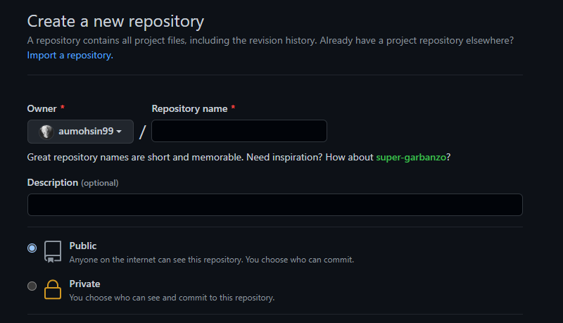

Welcome to a basic guide for Git and GitHub
This is a basic guide on how to start using Git and GitHub for collaboration and version
control system.
These two are very important tools for the above mentioned tasks.
Pre-Requisites
You need to have these softwares installed on your sytem before you can start using Git and GitHub.
Apart from these softwares, you need to have an active GitHub account.
If you already have a GitHub account, well and good.
Otherwise you can create a new account using these guidelines.
After setting up above things, we are now ready to explore Git and GitHub.
Brief Introducation
Let's breifly explain about the terms we are going to explore.
Git
It is a version control system. You can manage different versions of your code using this tool. More importantly, you can create different
branches of code and revert to previous stable version.
GitHub
It is an online tool for code management. You can use this site to save your code and projects. Later on, you can retrieve
your project from here to your local desktop PC.
It provides you a number of options to collaborate with your team and organization.
Creating Repository
You can create a repository on GitHub using the following steps.
Although there are other ways as well but I believe this is the easiest.
- Open GitHub and at the top right corner, click create new repository

-
Write the name of repository you want. Then GitHub will check if that name of repository is available or not.
If it is available, then you can create it. Otherwise you will get an error message.
Then you need to choose a differnt name.
-
You can choose a description for your repository. However it's optional.
-
You have the right to choose the privacy level for your repository in two options.
Either it can be public or private.
For this guide, we shall keep it public for easiness.
-
Ignore rest of the options for now and click create repository.
-
An empty repository will be created in your GitHub account.
Enjoy 🙂
Time for coding
-
Open VS Code and create a new file.
-
Write some code in the file.
I have written HTML script in the file.

-
Save the file.
-
You can see the file saved in the left side of VS Code.
-
So far, we have created a local project.
GitHub Local Setup
-
Open command prompt and navigate to your local project folder.
-
In the command prompt, type git init to initialize the repository.
-
You will get a message that the repository is initialized.
-
Now you can add files to the repository.
-
In the command prompt, type git add . to add all the files in the repository.
-
You will get a message that all the files are added.
-
Now you can commit the files.
-
In the command prompt, type git commit -m "Initial commit" to commit the files.
-
You will get a message that the files are committed.
GitHub Online Setup
-
Now you can push the files to the repository.
-
In the command prompt, type git push origin master to push the files to the repository.
-
You will get a message that the files are pushed.
-
Now you can pull the files from the repository.
-
In the command prompt, type git pull origin master to pull the files from the repository.
-
You will get a message that the files are pulled.
-
Now you can see the files in the repository.
Extra Resources
-
In the command prompt, type git status to see the status of the repository.
-
In the command prompt, type git log to see the log of the repository.
-
In the command prompt, type git branch to see the branches of the repository.
-
In the command prompt, type git checkout -b new-branch to create a new branch.
-
In the command prompt, type git checkout new-branch to switch to the new branch.
-
You'll be moved to master new-branch now.
-
In the command prompt, type git checkout master to switch to the master branch.
-
You'll be moved to master branch now.
-
In the command prompt, type git branch -d new-branch to delete the new branch.
-
new-branch will be deleted.
-
In the command prompt, type git branch to see the branches of the repository.
Git official documentation
Thanks for reading.